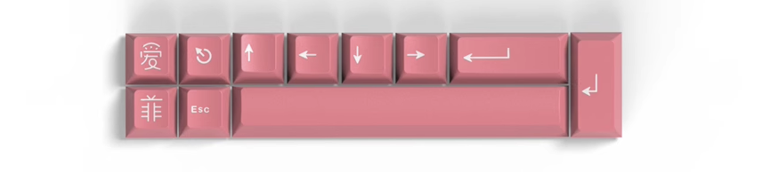
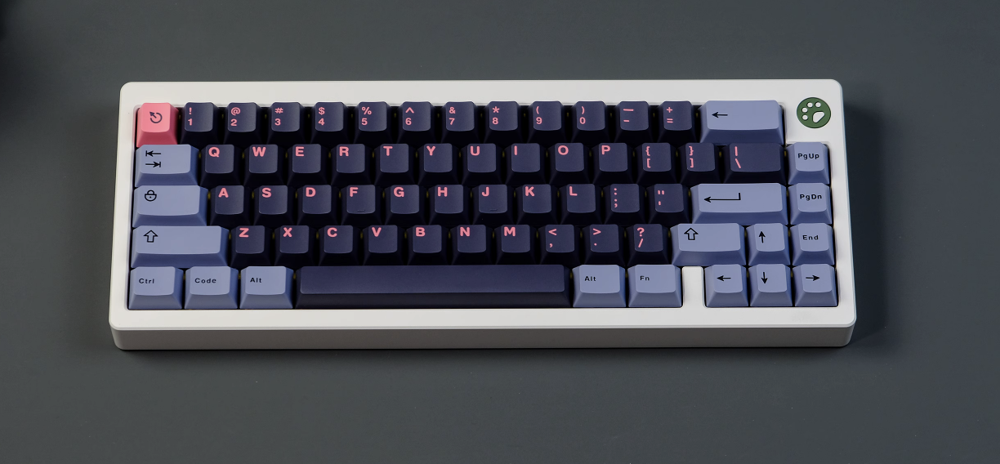
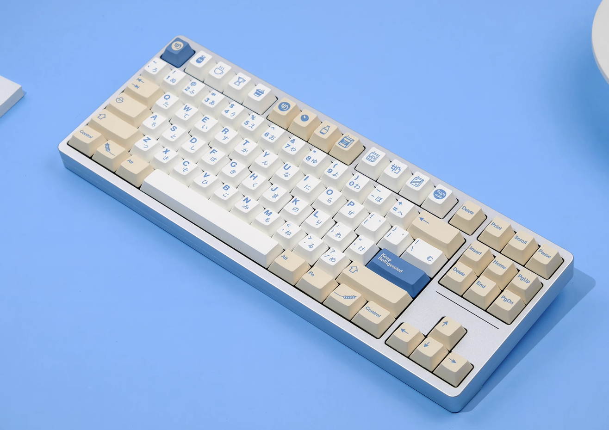
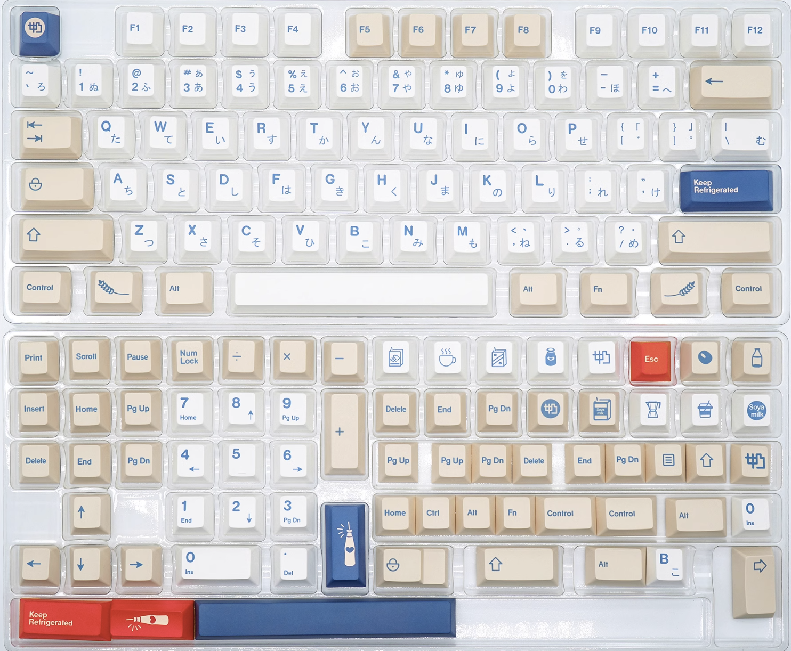
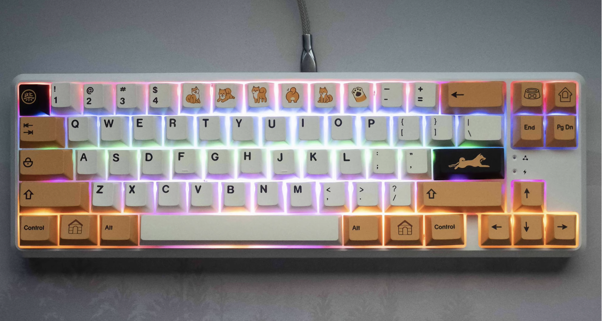

CherryABS2s-1 (demo [base + extras])
450kCherryABS2s-1 (base)
420k
CherryABS2s-1 (extras)
50kCherryABS2s-1 (demo [base + extras])
450kCherryABS2s-2 (demo[base + extras])
300kCherryABS2s-2 (base)
250kCherryABS2s-2 (extras)
50kCherryABS2s-2 (demo [base + extras])
300kCherryABS2s-3 (demo [base-1 + extras])
280kCherryABS2s-3 (base-1)
200kCherryABS2s-3 (extras)
100kCherryABS2s-3 (base-2)
200kCherryABS2s-3 (demo [base-1 + extras])
280kCherryABS2s-3 (demo [base-1 + extras])
280kCherryABS2s-4 (demo [base])
250kCherryABS2s-4 (base)
250k
CherryABS2s-4 (extras)
50kCherryABS2s-4 (demo [base])
250kCherryABS2s-5 (demo [base + extras])
300kCherryABS2s-5 (base)
250kCherryABS2s-5 (extras)
50kCherryABS2s-5 (demo [base + extras])
300kCherryABS2s-5 (demo [base + extras])
300kCherryABS2s-6 (demo [base + extras])
300kCherryABS2s-6 (base)
250kCherryABS2s-6 (extras)
50kCherryABS2s-6 (demo [base + extras])
300kCherryABS2s-6 (demo [base + extras])
300kCherryABS2s-7 (demo [base + extras])
300kCherryABS2s-7 (base)
250kCherryABS2s-7 (extras)
50kCherryABS2s-7 (demo [base + extras])
300kCherryABS2s-7 (demo [base + extras])
300kCherryABS2s-8 (demo [base + extras])
300kCherryABS2s-8 (base)
250kCherryABS2s-8 (extras)
50kCherryABS2s-8 (demo [base + extras])
300kCherryABS2s-8 (demo [base + extras])
300kCherryABS2s-9 (demo [base + extras])
300kCherryABS2s-9 (demo [base + extras])
300kCherryABS2s-9 (base)
250kCherryABS2s-9 (extras)
50k
CherryABS2s-9 (demo [base + extras])
300kCherryABS2s-10 (demo [base + extras])
300kCherryABS2s-10 (base)
250k

CherryABS2s-10 (extras)
50kCherryABS2s-10 (demo [base + extras])
300kCherryABS2s-10 (demo [base + extras])
300kCherryABS2s-11 (demo [base])
320k
CherryABS2s-11 (base)
320kCherryABS2s-11 (demo [base])
320kCherryABS2s-11 (demo [base])
320kCherryABS2s-12 (demo [base])
280kCherryABS2s-12 (demo [base])
280kCherryABS2s-12 (base)
280k
CherryABS2s-12 (demo [base])
280kCherryABS2s-12 (demo [base])
280kCherryABS2s-13 (demo [base + extras])
300kCherryABS2s-13 (base)
250kCherryABS2s-13 (extras)
50kCherryABS2s-13 (demo [base + extras])
300kCherryABS2s-13 (demo [base + extras])
300k
CherryABS2s-14 (base)
250kCherryABS2s-14 (extras)
50k
CherryABS2s-14 (base)
250kCherryABS2s-14 (extras)
50kCherryABS2s-15 (demo [base + extras])
300kCherryABS2s-15 (base)
250kCherryABS2s-15 (extras)
50kCherryABS2s-15 (demo [base + extras])
300k
CherryABS2s-15 (full)
500kCherryABS2s-15 (demo [full])
500kCherryABS2s-15 (demo [full])
500kCherryABS2s-15 (demo [full])
500kCherryABS2s-15 (demo [full])
500kCherryABS2s-16 (demo [base + extras])
300kCherryABS2s-16 (base)
250kCherryABS2s-16 (extras)
50kCherryABS2s-16 (demo [base + extras])
300kCherryABS2s-16 (demo [base + extras])
300kCherryABS2s-16 (full)
500kCherryABS2s-16 (demo [full])
500kCherryABS2s-16 (demo [full])
500kCherryABS2s-17 (demo [base + extras])
300kCherryABS2s-17 (base)
250kCherryABS2s-17 (extras)
50kCherryABS2s-17 (demo [base + extras])
300kCherryABS2s-17 (full)
500kCherryABS2s-17 (demo [full])
500kCherryABS2s-17 (demo [full])
500kCherryABS2s-18 (demo [base + extras])
300kCherryABS2s-18 (base)
250kCherryABS2s-18 (extras)
50kCherryABS2s-18 (demo [base + extras])
300kCherryABS2s-18 (demo [base + extras])
300kCherryABS2s-18 (full)
500kCherryABS2s-18 (demo [full])
500kCherryABS2s-18 (demo [full])
500k

CherryABS2s-19 (demo [base + extras])
300kCherryABS2s-19 (base)
250kCherryABS2s-19 (extras)
50kCherryABS2s-19 (demo [base + extras])
300kCherryABS2s-19 (full)
500kCherryABS2s-19 (demo [full])
500kCherryABS2s-20 (demo [base + extras])
300kCherryABS2s-20 (base)
250kCherryABS2s-20 (extras)
50kCherryABS2s-20 (demo [base + extras])
300kCherryABS2s-20 (full)
500kCherryABS2s-21 (demo [base + extras])
300kCherryABS2s-21 (base)
250k
CherryABS2s-21 (extras)
50kCherryABS2s-21 (demo [base + extras])
300kCherryABS2s-21 (full)
500kCherryABS2s-22 (demo [base])
330kCherryABS2s-22 (base)
330kCherryABS2s-22 (demo [base])
330kCherryABS2s-22 (demo [base])
330kCherryABS2s-23 (demo [base])
330kCherryABS2s-23 (base)
330kCherryABS2s-23 (demo [base])
330kCherryABS2s-23 (demo [base])
330kCherryABS2s-24 (demo [base])
330kCherryABS2s-24 (base)
330kCherryABS2s-24 (demo [base])
330kCherryABS2s-24 (demo [base])
330kCherryPBTDyeSub-25 (demo [base])
300kCherryPBTDyeSub-25 (base)
300kCherryPBTDyeSub-25 (demo [base])
300kCherryPBTDyeSub-25 (demo [base])
300kCherryPBTDyeSub-25 (demo [base])
300kCherryPBTDyeSub-25 (demo [base])
300k

CherryPBTDyeSub-26 (demo [base])
300k

CherryPBTDyeSub-26 (base)
300kCherryPBTDyeSub-26 (demo [base])
300kCherryPBTDyeSub-26 (demo [base])
300kCherryPBTDyeSub-27 (demo [base])
300kCherryPBTDyeSub-27 (base)
300k
